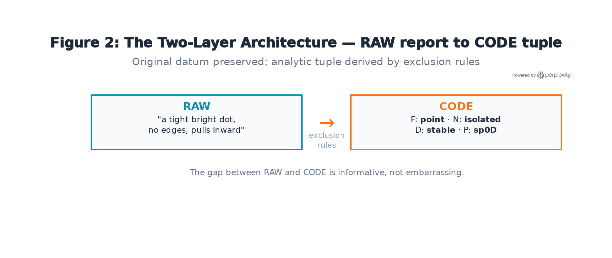
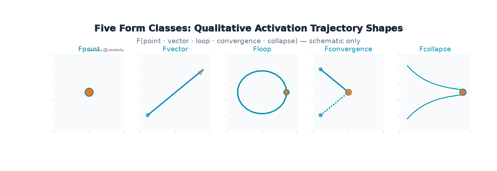

I'm an ideasthete — someone whose perceptual system generates structured concurrent experiences in response to concept activation, not sensory input. When I encounter a word or idea, I experience it as having shape, boundary conditions, dynamics, and local density. These aren't metaphors. They're stable, replicable perceptual signatures that vary with the semantic properties of the triggering concept — stable in the sense that the same concept reliably produces the same structural report on independent encounters, recorded before any coding takes place.
Over the past year, working collaboratively with Claude (Anthropic), I've built three things from that phenomenological access:
I'm a university English lecturer, not a cognitive scientist or an ML researcher. I have first-person access to a phenomenon that may be relevant to your work, and I have a framework that might be worth testing from your side.
A note on terminology: the title uses "geometry" in the sense of representational geometry (Kriegeskorte & Kievit, 2013). The formal model operates at geometric (metric) level — Euclidean distances, vector projections. The notation system captures a different level: qualitative dynamical structure — features that survive changes in surface detail and metric rescaling. Mathematically, that's closer to topology than geometry. Both levels are in the paper; they're complementary, not competing.
Existing instruments for describing concurrent experiences — colour wheels, shape libraries, spatial diagrams — impose their own categorical structure on what they measure. They can't represent motion, contraction, convergence, or the difference between a bounded point and a collapsing trajectory. More fundamentally, they conflate properties that should be kept separate: the form of a representation, its relational position, its temporal behaviour, and its local density.
The notation separates these into a two-layer architecture:

| Layer | What it is | What it does |
|---|---|---|
| RAW | Spontaneous symbolic report | Original datum. Preserved exactly as produced. Not interpreted. |
| CODE | Analytic tuple: F N D P | Derived from RAW by exclusion rules. Scoreable and comparable across reporters. |
Form classifies the qualitative shape of the activation trajectory; Dynamics classifies its persistence and stability. Both concern temporal behaviour but at different levels — Form is the phase portrait, Dynamics is the stability classification.

| Axis | Values | What it captures |
|---|---|---|
| Form (F) | point · vector · loop · convergence · collapse | Qualitative shape of activation trajectory |
| Neighbourhood (N) | clustered · isolated · contrastive · gradient | Position relative to surrounding features. Boundary modifier: b⁰/b⁻/b⁺ |
| Dynamics (D) | stable · recursive · drifting · terminal | Persistence and stability over time |
| Packing-Dim (P) | sp0D · sp1D · med1D · med2D · den2D · den3D | Local feature density + degrees of freedom |
Exclusion rules enforce simplicity: assign the lowest-complexity value that fits. Where a concurrent has sequential phases, a transition operator codes the sequence: F[point→vector] means "begins as point, transitions to vector." Where two Form values genuinely co-occur simultaneously: F[point·vector].
Three deliberate exclusions: colour/texture (recorded separately for post-hoc analysis), affective valence (recorded separately to test whether dynamical class replicates independently), and metric detail (the notation captures qualitative class, not coordinates).
To test whether the notation captures something stable, I presented five stimulus words (TOUCH, FEAR, HOME, WANT, DEATH) to four LLMs with different architectures and training pipelines — GPT-4, Gemini Pro, Claude Sonnet, and ChatGPT — and asked each to generate raw symbolic reports. These were then coded using the exclusion rules.
| Stimulus | F | N | D | P | Agreement |
|---|---|---|---|---|---|
| TOUCH | convergence | isolated | stable | med1D | 3/4 bilateral meeting |
| FEAR | point→vector | clustered | drifting | den2D | 4/4 clustering; 3/4 discharge |
| HOME | loop | clustered | recursive | den2D | 4/4 recursion |
| WANT | vector | isolated | drifting | med1D | 4/4 forward direction |
| DEATH | point | contrastive | terminal | sp0D | 4/4 cessation |
Tuples reflect majority assignment; one system (Claude Sonnet) coded DEATH as Ddrifting rather than Dterminal — a genuine structural disagreement about whether DEATH is a limit state or an asymptotic approach. The notation caught the disagreement; a coarser instrument wouldn't have.
The model posits two generative systems — semantic (S) and perceptual (P) — with a cross-system coupling C: H_S → H_P that is quantitatively stronger in ideasthetes. The coupling is the structural primitive; if neuroimaging — specifically Dynamic Causal Modelling applied to fMRI — finds no differential effective connectivity from semantic to perceptual areas in ideasthetes vs. controls, the model fails.
The concurrent is generated as precision-gated cross-attention — a computational-level description in Marr's sense, not an architectural claim about biological implementation:
The softmax approximates divisive normalisation (Carandini & Heeger, 2012). The three projections separate distinct sources of variation: Q_P (what the perceptual system anticipates — relatively fixed), K_S (how the inducer is represented under current semantic context — context-dependent), V_S (what perceptual content is retrieved under current internal state — state-dependent). Context manipulations should shift K_S and therefore shift the concurrent proportionally to semantic distance; precision manipulations should change vividness without changing concurrent identity. Those are dissociable predictions.
Coupling strength C_t = τ̂_t · γ_t is multiplicative in semantic precision and arousal gain. An additive best fit kills the equation.
The paper asks whether F/N/D/P classes correspond to anything in the structure of neural network representations. That question needs to be concrete enough for someone with access to a model's internals to test.
| Form class | Hypothesis | Candidate signature |
|---|---|---|
| Fpoint | Compact, non-directional activation region | Low trajectory length; low local neighbourhood variance |
| Fvector | Directed extension along an axis through layers | High cosine similarity between successive layer-difference vectors |
| Floop | Representation revisits a previously occupied region | Off-diagonal structure in layer × layer similarity matrix (RQA) |
| Fconvergence | Two concepts converge to shared neighbourhood through processing | Increasing RSA across layers for semantically-related pairs only |
| Fcollapse | Dimensionality reduction through processing | Decreasing participation ratio / explained variance across layers |
Nclustered: high local density — many neighbouring concepts nearby. Nisolated: sparse neighbourhood — high average distance to k-nearest neighbours. Ncontrastive: identity maintained by suppression of similar concepts — testable via ablation; removing the concept's activation should release nearby suppressed features. This maps onto feature suppression dynamics in superposition.
The relevant "time" axis must be specified. For layer-depth (computational time): Dstable hypothesises recovery to baseline after activation patching; Drecursive hypothesises recovery after larger perturbations. For token-position (sequence time): Ddrifting hypothesises systematic shift under context variation; Dterminal hypothesises activation that decays without recovery after the concept token. These are distinct axes and the mapping between phenomenological "time" and computational dimensions is itself an empirical question.
For this pilot, "concept" means a single prompted word presented in a carrier sentence — not a token, lemma, or bare word-form — so that contextual variation can be systematically averaged across multiple sentence frames.
Take 20 concepts spanning the five Form classes (4 per class, chosen to be unambiguous on the Form axis). Present each in multiple carrier sentences. For each concept, extract residual stream activations across all layers. Compute:
Control for word frequency, concreteness, valence, token length (single vs. multi-token), and polysemy. If Form-class membership predicts these activation signatures better than chance — and better than these simpler predictors — the tuple schema is capturing something real about representational structure. If it doesn't, that's kill condition material.
Five results would require abandonment, not revision:
This paper originates from the problem of communication across unbridgeable difference. I experience concepts as having geometry. You study the geometry of representations computationally. Neither of us can fully access what the other has access to. But the notation system is an attempt at a shared vocabulary: precise enough to be falsifiable, structured enough to be comparable across human phenomenology and computational analysis, and honest enough to say where it breaks.
If the qualitative dynamical classes in the tuple schema correspond to anything in the attractor landscape of your models, that would be worth knowing. If they don't, that's also worth knowing, and the kill conditions are designed to find out.
I'm not claiming ideasthesia proves anything about AI representations. I'm asking whether a notation developed from the inside of one kind of structured representation maps onto the structure of another. That's an empirical question. The pilot above is one way to begin testing it.
Berlin, B., & Kay, P. (1969). Basic color terms: Their universality and evolution. University of California Press.
Bernardi, S., et al. (2020). The geometry of abstraction in the hippocampus and prefrontal cortex. Cell, 183(4), 954–967.
Carandini, M., & Heeger, D. J. (2012). Normalization as a canonical neural computation. Nature Reviews Neuroscience, 13(1), 51–62.
Elhage, N., et al. (2022). Toy models of superposition. Transformer Circuits Thread.
Kriegeskorte, N., & Kievit, R. A. (2013). Representational geometry. Trends in Cognitive Sciences, 17(8), 401–412.
Lindsey, D. T., & Brown, A. M. (2014). The color lexicon of American English. Journal of Vision, 14(2):17, 1–25.
Nikolić, D. (2009). Is synaesthesia actually ideaesthesia? Proceedings of the Third International Congress on Synaesthesia, Science & Art, Granada.